Skylands is a master planned housing development located at Tranmere Peninsula at Droughty Point comprising 2593 dwellings on a site covering 315 hectares (DPZ CoDesign, 2023). The site is located within the Greater Hobart Area, within the Clarence City Council local government area. The site has been identified as a greenfield development precinct by the Southern Tasmania Regional Land Use Strategy (See Figure 1) (Southern Tasmania Regional Planning Project Steering Committee, 2020).
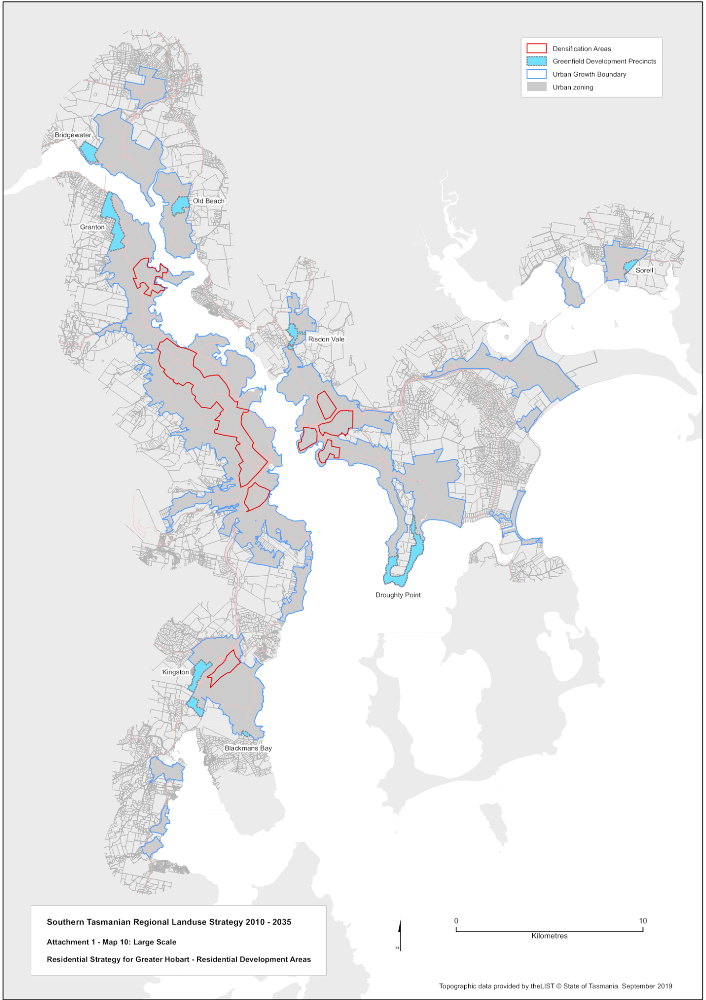
Figure 1. Residential Strategy for Greater Hobart - Residential Development Areas (Southern Tasmanian Councils Authority, 2020).
The masterplan was developed for the site by United States based urban design firm DPZ CoDesign initiated by the majority landowner the Carr family which was ultimately accepted by council in December 2023 (Clarence City Council, 2023).
This report will examine the Skylands masterplan from a strategic planning perspective focusing on critiquing and suggesting improvements for better active transport outcomes for Skylands.
Droughty Point and the Skylands development has a number of stakeholders with interest in how and what development proceeds at the site. These are shown in Table 1.
Table 1: Stakeholders, their roles and likely agenda.
| Stakeholder | Role/s | Likely Agenda |
| Carr Family Trust | Developer, Majority land owner. | Want to provide as many dwellings as possible to maximise value from the land. |
| DPZ CoDesign | Master plan developer. | Please the developer. |
| Lilly Family | Minor land owner. | Want to provide as many dwellings as possible to maximise value from the land. |
| Construction companies | Construction of dwellings and infrastructure on Droughty Point. | Want maximum number of dwellings to maximise work available at Droughty Point. |
| Clarence City Council | Planning Authority, developer of structure plan. | Want increased rate paying residents and development within the Clarence LGA. |
| Aboriginal Heritage Tasmania | Undertake Aboriginal Heritage Assessment | Protection of Aboriginal Heritage sites on Droughty Point. |
| Tasmanian Government (State Growth) | Plan significant infrastructure and services e.g. Schools, Highway upgrades, ferry and bus services. | Ensure sufficient services and infrastructure is provided to future Skylands residents. |
| Tasmanian Planning Commission | Assess the LPS Amendment. | Ensure Skylands is consistent with planning goals for Greater Hobart Area |
| Friends of Tranmere & Droughty Peninsula Association | Community group | Want to reduce traffic created from skylands through their community via reducing density and the number of dwellings. |
| General Public | Provide input during the exhibition process. | Many different agendas. |
The main beneficiaries from the Skylands development are the landowners of the Carr Family Trust and the Lily Family, who would gain great financial benefit through the subdivision and sale of individual parcels of their land. Construction companies will also benefit as Skylands will provide a significant amount of lucrative construction projects over the next 30 years of its planned construction. Clarence City Council can also be argued to benefit from the development with a dramatic increase to the number of rate paying residents, but will also likely have to contribute greatly to costs of maintenance of parks, trails, roads and other infrastructure.
Through the wording and identified groups in the Skylands master plan the target demographics and groups that the Skylands master plan is aimed towards can be identified. There is a great focus on families, and children with also mention of private schools, and downsizing parents and retirees in the introduction to living in Skylands section (DPZCoDesign, 2023). Combine this with the fact that a stated 5% of Skylands will be designated as “social/affordable housing” and it is clear to see that Skylands' main targeted demographic are young professional families, affluent retirees and empty nesters (DPZCoDesign, 2023). Planning for Aboriginal people is minimal with only one reference to the original indigenous owners of Droughty Point in the Skylands masterplan referencing the need to conserve Aboriginal heritage on the site (DPZCoDesign, 2023).
One of the main strategies being employed to encourage active transport in Skylands is the 20-minute walkable neighbourhood often referred to as 15 minute cities. A 15 minute city can be defined as a place where all the needs of modern human life can be met through walking or bicycling for 15 minutes or less (Duany, Steuteville, 2021). Skylands recognises this through the application of pedestrian/bicycling sheds in regards to proximity of its activity centres for the majority of residents to access multiple activity centres within a 5 minute walk (See Figure 2).
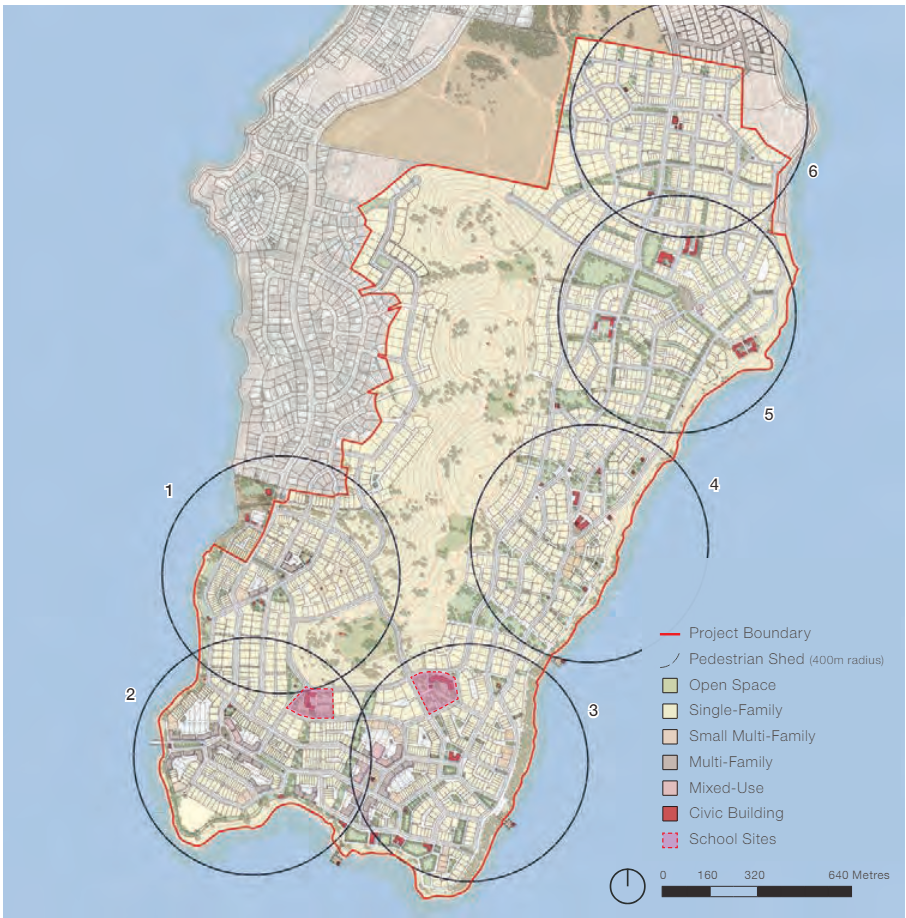
Figure 2: Skylands Master Plan pedestrian Sheds (DPZCoDesign, 2023, p484).
New Urbanism is one of the key urban development strategies implemented in the Skylands masterplan championed by DPZCoDesign as a response to conventional sprawl that promotes social and environmental benefits (DPZCoDesign, 2023). New urbanism is an urban planning movement that came out of the United States in the 70s and 80s that promotes a departure from wasteful and environmentally negative car dependent sprawl (Ellis, 2002). Skylands flavour of new urbanism looks to apply concepts of pedestrian first “complete” neighbourhoods to the Hobartian context. By using the example of pre-WW2 development of Battery Point, DPZCoDesign can be argued to appeal to nostalgia of historic development and perhaps suggests further the affluence of future Skylands residents considering Battery Point is Tasmania's most expensive suburb (Williams, 2022).
Active transport planning in Clarence has a somewhat limited scope and recent history with the last significant active transport strategy for Clarence being the Clarence Bicycle Strategy & Action Plan 2013-2017 (Clarence City Council, 2013). Greater Hobart plans such as the Keeping Hobart Moving plan outlines the importance of better walking and bike riding links to public transport corridors and activity centres but fails to acknowledge the Tranmere and Droughty Point areas focusing on the key routes connecting Rosny Park and Hobart in Clarence (Department of State Growth, 2023). The Greater Hobart Cycling Plan continues with this trend with the proposed cycling network not reaching Tranmere, a suburb with currently no cycling infrastructure, let alone to Droughty Point (Department of State Growth, 2021).
The Skylands master plan, although filled with good intent to create walkable and bikeable neighbourhoods, has significant challenges to overcome in making this a reality.
Droughty Point is a considerable hilly site with the majority of the site lying on a slope of greater than 10% (See Figure 3).
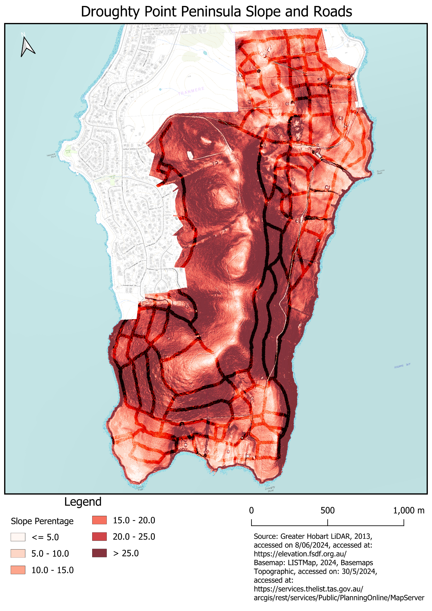
Figure 3: Droughty Point Slope Analysis.
Slope is a considerable factor in mandating for the bicycle friendly nature of a neighbourhood with bicycle usage decreasing when slopes exceed 4% with uphill slopes reducing bike usage significantly (Eren, Uz, 2020). Slope is also important for walkability with steep slopes having significant negative effects on the attractiveness of walking as a transport mode (Jeong et al, 2023). The Skylands master plan with its 400m pedestrian sheds does not currently take into account slope as part of its calculation for pedestrian catchment or how it will limit bicycle connectivity with the foreshore trail. Currently almost all non cross slope streets fall outside the recommended gradient of basic bicycle routes established by the European Cyclists’ Federation (See Table 2).
Table 2: Recommended maximum gradient values for different categories of cycle routes in the function of the height difference to overcome. (Buczyński, A., 2023, p12)
| Height Difference | Basic Cycle Route | Main Cycle Route | Cycle highway |
| 1 m | 10.0% | 8.0% | 6.0% |
| 2 m | 10.0% | 7.5% | 5.0% |
| 3 m | 7.0% | 6.0% | 5.0% |
| 5 m | 6.0% | 5.0% | 4.0% |
| 7.5 m | 5.0% | 4.0% | 3.0% |
| 10 m | 5.0% | 3.5% | 2.5% |
| 15 m | 4.5% | 3.0% | 2.0% |
| 100m and more | 3.0% | 3.0% | 2.0% |
Due to the geographical positioning of the site on the end of the Tranmere Peninsula the site is largely unsheltered from incoming north westerly and north north westerly winds with winds at speeds of 20km/h or greater 31% of the time (Willy Weather, 2024). Wind speed has been shown to significantly negatively affect the number of trips and the number of long distance trips being taken by bicycle (Corcoran et al, 2014). In designing the bicycle network for Skylands there needs to be significant consideration of how best to mitigate these effects which is currently not considered in the master plan.
The Tranmere and Howrah area have limited active transport usage shown through low modal share of active transport as a means to get to work (See Figure 4).
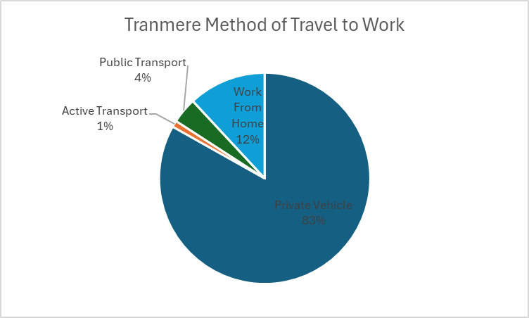
Figure 4: Tranmere Method of Travel to Work (Australian Bureau of Statistics, 2021b).
There is significant potential for increasing the modal share of active transport through the Skylands Development as in the Clarence LGA 54% of trips 0-0.8km are via active transport (Sift Research, 2020) (See Figure 5).
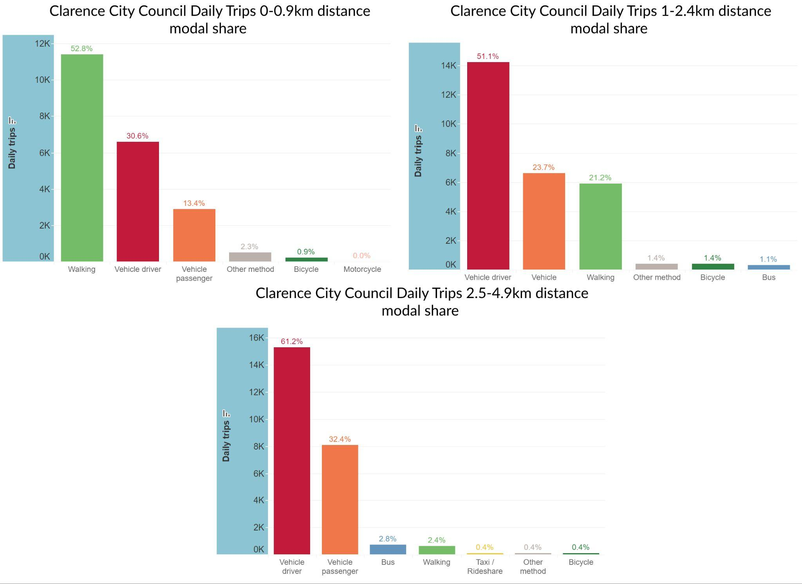
Figure 5: Modal Shares of Clarence LGA at different distances (Sift Research, 2020)
These 800m or less trips are what Skylands is targeting as trips to be done via walking or active transport as part of the 400m pedestrian sheds around activity centres (DPZCoDesign, 2023).
This shows that currently in Clarence LGA any trip over 1 km is likely to be by private motor vehicle and there is considerable tendency for residents that are likely to live in Skylands to continue with this trend.
Skylands residents, like those of the neighbouring suburb of Tranmere, are likely to be older affluent, with high levels of car ownership (See Figure 6).
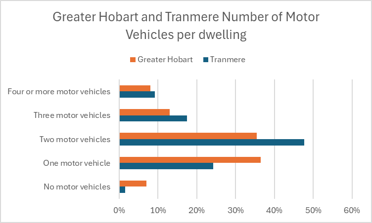
Figure 6: Car ownership comparison Tranmere and Greater Hobart Area (Australian Bureau of Statistics, 2021a; Australian Bureau of Statistics, 2021b).
If the Skylands master plan is to discourage the use of private motor vehicles, and encourage uptake of active transport in these areas there needs to be significant deterrents to car ownership currently not included in the plan. Factors such car parking, regarding on street parking provision, off street parking provision, parking minimums and maximums for housing types and street design to discourage private motor vehicle use are all levers that the skylands masterplan fails to capture.
Without destinations that a resident of Skylands needs for everyday life within a comfortable active transport distance, a resident will instead choose to use a private motor vehicle to go to a destination that is outside of Skylands. Implementing new urbanism approaches in Australia have been shown to have limited effects on car dependence, as the walkability improvements have no key benefit for work trips, and few local utilitarian transport opportunities are available (Falconer, Newman, Giles-Corit, 2010). Part of this process is making Skylands, as well as a great place to live, a destination where people want to visit and spend time. The neighbouring suburb of Tranmere and the majority of Howrah has limited trip generators as they are almost entirely residential (See Figure 7).
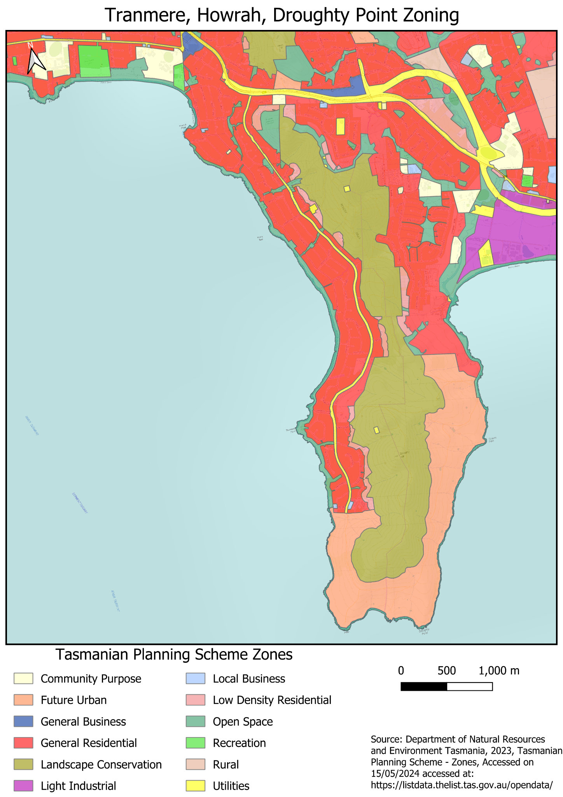
Figure 7: Tranmere, Howrah and Droughty Point Zoning.
This provides a major opportunity to rethink the activity centres, and non residential uses of Skylands in the context of serving more than just its residents (See Table 3).
Table 3: Non residential uses promoted for Skylands
| Trip Generator Identified in Skylands masterplan | Likelihood to generate trips from outside Skylands |
| Neighbourhood Centre Plaza | Very Likely |
| Public School | Very Likely |
| Private School | Very Likely |
| Skylands Beach | Likely |
| Hilltop Parklands | Very Likely |
| Clubhouses | Not Likely |
| Restaurants | Very Likely |
| Ferry Terminal | Likely |
| Foreshore Trail | Likely |
| Beach Clubs | Very Likely |
| Small School | Likely |
| Grocer | Very Likely |
| Coffee Shops | Very Likely |
| Museums | Likely |
| Commercial Buildings | Likely |
The reality is that Skylands residents, either for work or other reasons, will have to leave Skylands, the challenge here is linking active transport systems to high frequency transit stops and make this option more attractive for the vast majority of trips.
The main challenge regarding improving the Skylands masterplan is how to discourage car travel and encourage active and public transport usage. To successfully encourage the uptake of active transport as the primary form of mode travel for short to medium distances there needs to be a combination of incentive measures and disincentive measures for private motor vehicle use.
In order to address challenge 1 and overcome the geographical and weather limitations of the Droughty Point site significant care needs to be made in the designing pedestrian and bicycle infrastructure.
The foreshore trail due to its complete separation from other traffic, scenic location along the coast, and connection between every neighbourhood is likely to be the most popular active transport corridor similar to the Clarence Foreshore Trail the most popular cycling route in Clarence (Bicycle Network, 2023). To protect the foreshore trail from wind, and potential sea spray, native shrubs and trees should be planted in between the coastline and the foreshore trail. Due to the significant length of the trail of around 6-7 km there also should be consideration for protected shelters, providing shade, water and benches to allow for respite from weather conditions and places to rest (See Figure 8).
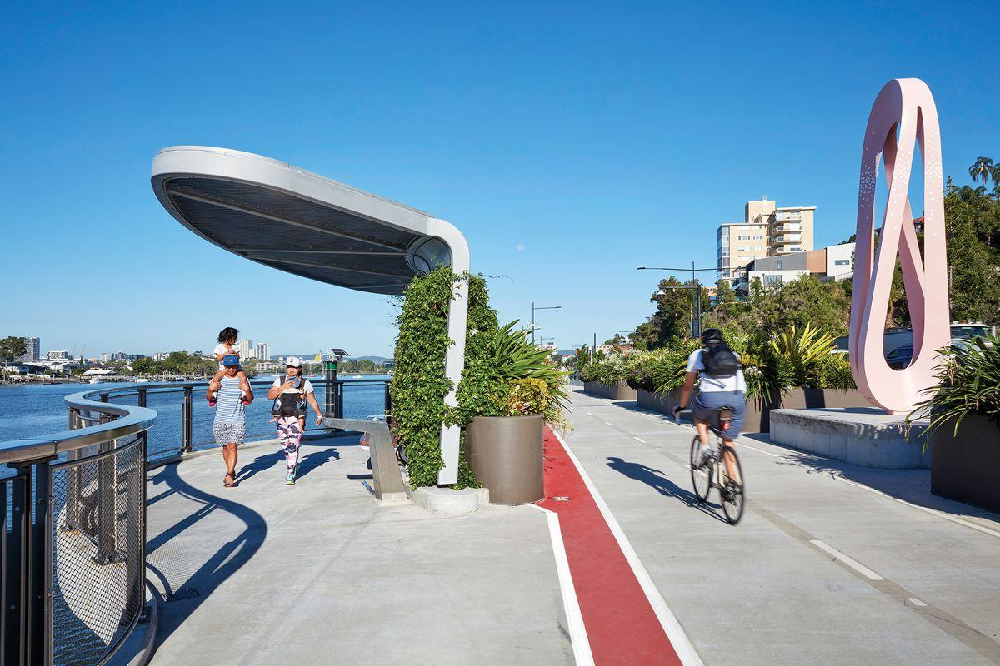
Figure 8: Example of a protected pedestrian shelter along a foreshore trail (Jones, 2021).
In order to offset the negative effects of the steep nature of the Skylands site for active transport there needs to be a redesign of the proposed active transport network. The easiest solution for this would be to advocate for uptake of e-bikes and e-mobility devices that would negate some of the effects of the slopes. Hobart already has high e-bike usage compared to mainland capitals likely in part to its hilly geography (Bicycle Network, 2024).
In order to accommodate for the very steep slopes at Skylands, some of the steepest roads should be converted to switchbacks to make long continuously high gradient slopes easier for bicycle users which would double as traffic calming and disincentive measures for rat running (See Figure 9).
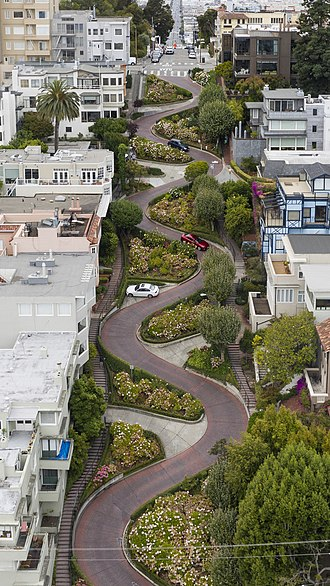
Figure 9: Example of a switchback street Lombard Street San Francisco (Michel, 2020).
In addition to this, the creation of flat rest points with benches and shelters on long steep slopes should be implemented on pedestrian paths that go up slopes.
The street designs do not adequately protect bicyclists; the buffered unprotected design would be seen as unsuitable for all ages and abilities under the Greater Hobart Cycling Plan (Department of State Growth, 2021) (See Figure 10).
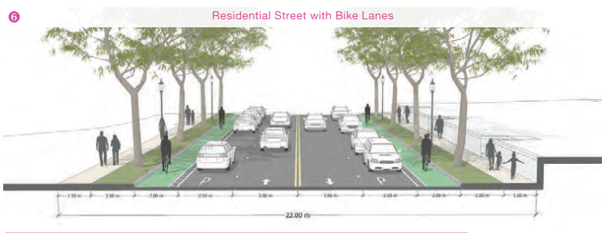
Figure 10: Current street design for residential streets in Skylands (DPZCoDesign, 2023)
Fixing this would involve swapping the bicycle lane and the planting strip to use the planting strip as a natural protection for the bike lane (See Figure 11)
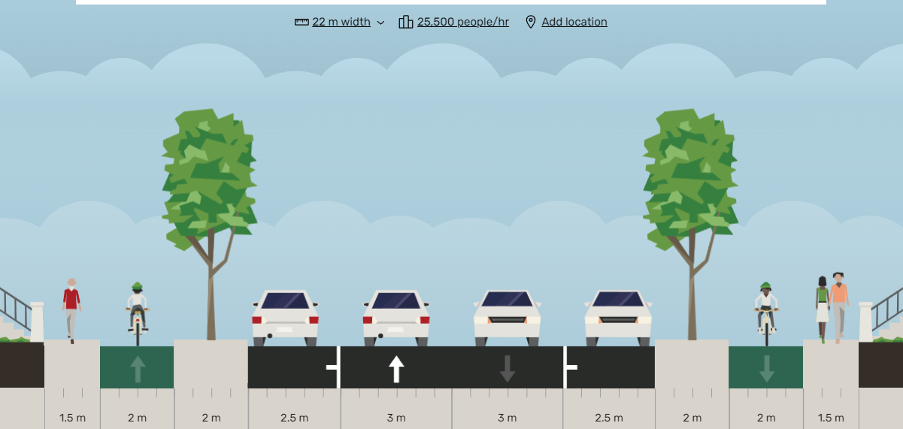
Figure 11: Bicycle protected street (StreetMix, 2024).
The street layout for bicycle usage also has issues with no bicycle safe connections to the proposed school sites, with the protected bicycle lanes streets only on primary roads (See Figure 12).
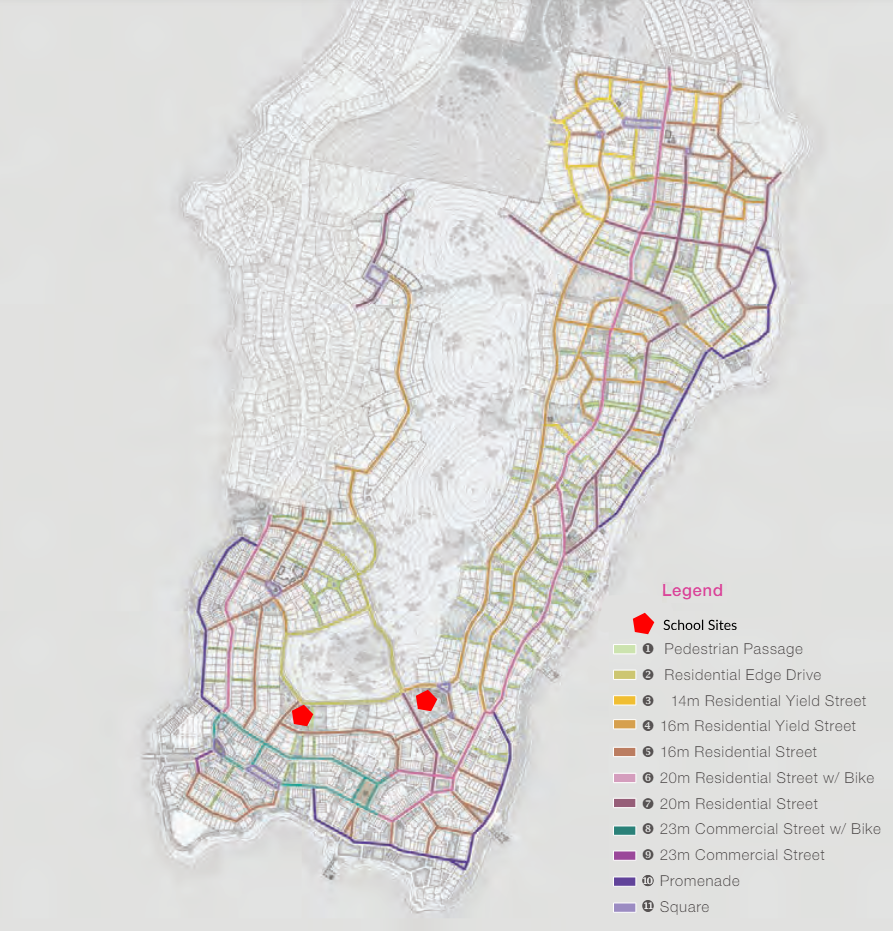
Figure 12: Street Types (DPZCoDesign, 2023).
Ultimately car traffic should for the majority of trips be on primary streets. This should be fixed by the use of one way streets and strategically placed modal filters within the road network to force motor vehicle traffic onto primary streets and prevent “rat running” through residential areas. An example of this could be to change the Residential Edge Drive Secondary street that goes to Promontory Lookout Park to a one way looping narrow street for cars accessible only from the northern entrance. By retaining bidirectional travel for active transport similar to how Victoria Esplanade operates around the Bellerive foreshore this would have the benefits of reducing rat running and encouraging using active transport to access Promontory Lookout Park.
The current street design for Skylands has an over allocation of street space for on-street parking. On-street parking oversupply, induces more residents to use private motor vehicles rather than active transport to make trips (Oeschger, Carroll, Caulfield, 2020). To solve this, the majority of on-street parking except for loading zones and disabled access in key areas where car usage should be removed. This should be focused around key areas of the proposed school sites, neighbourhood centre sites, daycare centres and mixed-use activity centres. Parking demand should instead be met by car parking lots in key locations, which would create certainty for people who do drive that they would be able to find parking, while eliminating the traffic circulation problem when people seek available parking in peak times (City of Hobart, 2024). This would have the additional benefit of being able to reduce the width of streets to be built, resulting in cheaper construction of roads that have to be cut and filled.
Supplementing this should be the introduction of maximum car parking provision and removal of minimum car parking provision under the Specific Area Plan developed for the site. This would help combat the tendency discussed above of Tranmere residents' high motor vehicle ownership rates.
To make Skylands a true 20 minute neighbourhood there needs public transport stops within walking distance of transit stops. The current proposed transit stops are evenly spaced to provide equal access to residents but fail to accommodate high trip generators such as school sites (See Figure 13).
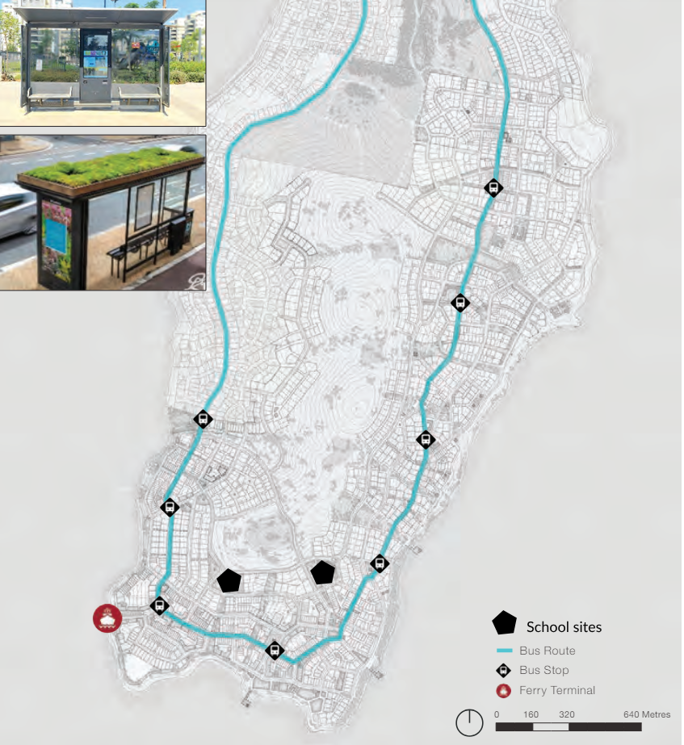
Figure 13: Proposed transit stops in Skylands (DPZCoDesign, 2023).
By adding additional school only time only services it could elevate pressures of school pick up and drop off car trips. This would have the added effect of making roads surrounding schools less congested in peak times and increasing safety for active transport trips to and from the schools. Micro mobility parking at transit stops should be implemented to encourage residents using public transport to leave skylands to use active transport rather than a private motor vehicle.
Skylands master plan currently does not have enough local trip generators to induce short trips made via active transport. To increase local trips more opportunities for work and play need to be instigated into the Skylands masterplan. Part of this is considering that Skylands will be a place for more than just residents and making it a destination.
Estimated people in the labour force in Skylands at completion would be roughly 3337 based on dwelling number and participation in the labour force in Tranmere (Australian Bureau of Statistics, 2021b). Comparing this with the estimated 925 jobs where people would be working within Skylands (See Table 4) it is clear to see that the vast majority of Skylands workforce will have to leave Skylands for work opportunities.
Table 4: Skylands estimates for current employment at the site. (Woolworths Limited, 2010; Ethos Urban, 2021; City of Melbourne, 2021; Australian Bureau of Statistics, 2021b).
| Employer | Current Area (m2) | Jobs Produced |
| Retail and Office | 9580 | 430 |
| Grocer | 2000 | 80 |
| Work from Home | - | 335 |
| Schools | 24850 | 80 |
| Total | 36530 | 925 |
To increase the number of local commuter trips, office space and retail space should be substantially increased. This would substantially boost the number of local jobs available within Skylands and would also help make Skylands attractive as a destination. Tranmere residents currently are not served by any local amenities or services within their suburb. This provides Skylands with the opportunity to replace Howrah and Shoreline as their primary local services location.
The Skylands masterplan is an ambitious attempt at designing walkable new urbanist neighbourhoods that ultimately fails in its attempt to apply these principles to the Droughty Point site and the context of the surrounding suburbs. For Skylands to ultimately be successful in implementing 20 minute neighbourhoods with low car dependence there needs to be considerable refactoring of the plan to account for the limitations of the site, and the site's context within the Greater Hobart Area.
Australian Bureau of Statistics, 2021a, Greater Hobart, Australian Bureau of Statistics, accessed at: https://abs.gov.au/census/find-census-data/community-profiles/2021/6GHOB
Australian Bureau of Statistics, 2021b, Tranmere (Tas.), Australian Bureau of Statistics, accessed at: https://abs.gov.au/census/find-census-data/community-profiles/2021/SAL60686
Bicycle Network 2024, New bike count data shows women embracing e-bikes, Bicycle Network, Accessed at: https://bicyclenetwork.com.au/newsroom/2024/05/07/new-bike-count-data-shows-women-embracing-e-bikes/
Bicycle Network, 2023, Clarence Commuter Count Data, Bicycle Network, accessed at: https://bicyclenetwork.com.au/our-services/transport-surveys-and-data/data-dashboard/
Buczyński, A., 2023, Quality parameters for cycle infrastructure: longitudinal gradients, European Cyclist Federation, accessed at: https://www.ecf.com/system/files/Quality_parameters_longitudinal_gradients.pdf
City of Melbourne, 2021, Census of Land Use and Employment, City of Melbourne, accessed at: https://www.melbourne.vic.gov.au/SiteCollectionDocuments/clue-2021-summary-report.pdf
Clarence City Council, 2023, 8.4.2 SKYLAND MASTERPLAN – MOTION D OUTCOMES, Clarence City Council, Council Meeting, 11/12/2023, p439-460, accessed at: https://www.ccc.tas.gov.au/wp-content/uploads/2023/12/a11.12.23.pdf
Corcoran, J., Li, T., Rohde, D., Charles-Edwards, E., Mateo-Babiano, D., 2014, Spatio-temporal patterns of a Public Bicycle Sharing Program: the effect of weather and calendar events, Journal of Transport Geography, Vol 41, p292-305, accessed at: https://doi.org/10.1016/j.jtrangeo.2014.09.003
Department of State Growth, 2021, Greater Hobart Cycling Plan, Department of State Growth, https://www.stategrowth.tas.gov.au/__data/assets/pdf_file/0010/416962/Greater_Hobart_Cycling_Plan_FINAL.pdf
Department of State Growth, 2023, Keeping Hobat Moving - Transport Solutions for Our Future, Tasmanian Government, accessed at: https://www.keepinghobartmoving.tas.gov.au/__data/assets/pdf_file/0011/466715/Keep_Hobart_Moving_Transport_Solutions_for_Our_Future.pdf
DPZ CoDesign, 2023, Skylands Summary Master Plan Report, DPZ CoDesign, accessed at: https://www.ccc.tas.gov.au/wp-content/uploads/2023/12/a11.12.23.pdf
Duany, A., Steuteville, R., 2021, Defining the 15-minute city, Congress for the New Urbanism, accessed at: https://www.cnu.org/publicsquare/2021/02/08/defining-15-minute-city
Ellis, C., 2002, The New Urbanism: Critiques and Rebuttals, Journal of Urban Design, 7:3, 261-291, DOI: 10.1080/1357480022000039330
Eren E., Uz, V. E., 2020, A review on bike-sharing: The factors affecting bike-sharing demand, Sustainable Cities and Society, Vol 54, accessed at: https://www.sciencedirect.com/science/article/pii/S2210670719312387?casa_token=lwAPTIWSxbwAAAAA:atpTf2gntG4d4rEViWQTdcczHrBkjP2vcaeTX7sWLZ4eTt9z-7pJdbhCY2ur8RRjj05KMvJSjZMN
Ethos Urban, 2021, Economic Assessment, accessed at: https://meetings.cityofsydney.nsw.gov.au/documents/s56621/Attachment%20A2%20-%20Economic%20Assessment.pdf
Falconer, R., Newman, P., Giles-Corti, B. Is practice aligned with the principles? Implementing New Urbanism in Perth, Western Australia, Transport Policy, Vol 17, Issue 5, p 287-294, accessed at: https://www.sciencedirect.com/science/article/pii/S0967070X1000034X
Jeong, I., Choi, M., Kwak, J., Ku, D., Lee, S., 2023 A comprehensive walkability evaluation system for promoting environmental benefits. Sci Rep 13, https://doi.org/10.1038/s41598-023-43261-0
Jones, C.R, 2021, Landscape Australia, [image], accessed at: https://media3.architecturemedia.net/site_media/media/cache/5f/f5/5ff5562afd0a8f9bdb25dff865e66420.jpg
Mekel, C., 2020, Lombard Street, Wikipedia, [image], accessed at: https://en.wikipedia.org/wiki/Lombard_Street_%28San_Francisco%29#/media/File:Lombard_Street_2020.jpg
Oeschger, G., Carroll, P., Caulfield, B., 2020, Micromobility and public transport integration: The current state of knowledge, Transportation Research Part D: Transport and Environment, Vol 89, accessed at: https://doi.org/10.1016/j.trd.2020.102628.
Sift Research, 2020, Summary results from the 2019 Greater Hobart Household Survey of Travel, accessed at: https://public.tableau.com/app/profile/hobart.travel.survey.team/viz/GreaterHobartTravelProfile2019/Introduction
Southern Tasmania Regional Planning Project Steering Committee, 2020, Southern Tasmania Regional Land Use Strategy 2010–2035, Southern Tasmanian Councils Authority, accessed at: https://planningreform.tas.gov.au/__data/assets/pdf_file/0009/559791/Southern-Tasmania-Regional-Land-Use-Strategy-2010-2035-Effective-19-February-2020.PDF
Streetmix, 2024, [image], accessed at: https://streetmix.net/-/2600950
Williams, S., 2022, Why Tasmania continues to attract buyers from the mainland, Domain, accessed at: https://www.domain.com.au/news/why-tasmania-continues-to-draw-in-buyers-from-the-mainland-1139797/
Willy Weather, 2024, Droughty Point Wind Forecast, accessed at: https://wind.willyweather.com.au/tas/hobart/droughty-point.html
Woolworths Limited, 2010, Productivity Commission Performance Benchmarking of Australian Business Regulation: Planning, Zoning and Development Assessments, Woolworths Limited, accessed at: https://www.pc.gov.au/inquiries/completed/regulation-benchmarking-planning/submissions/sub065.pdf